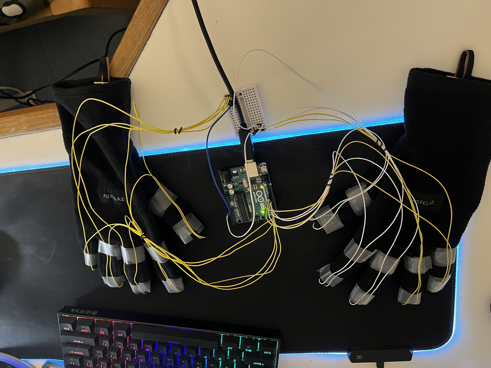
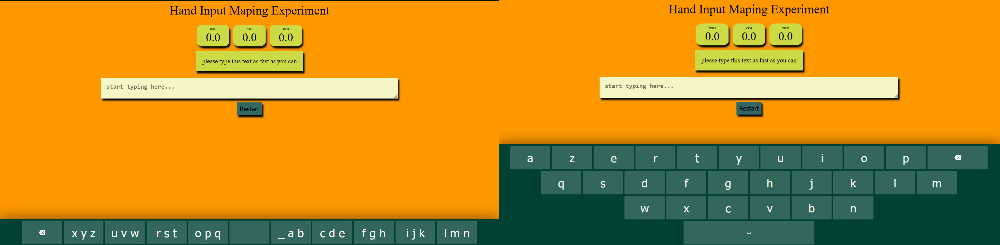
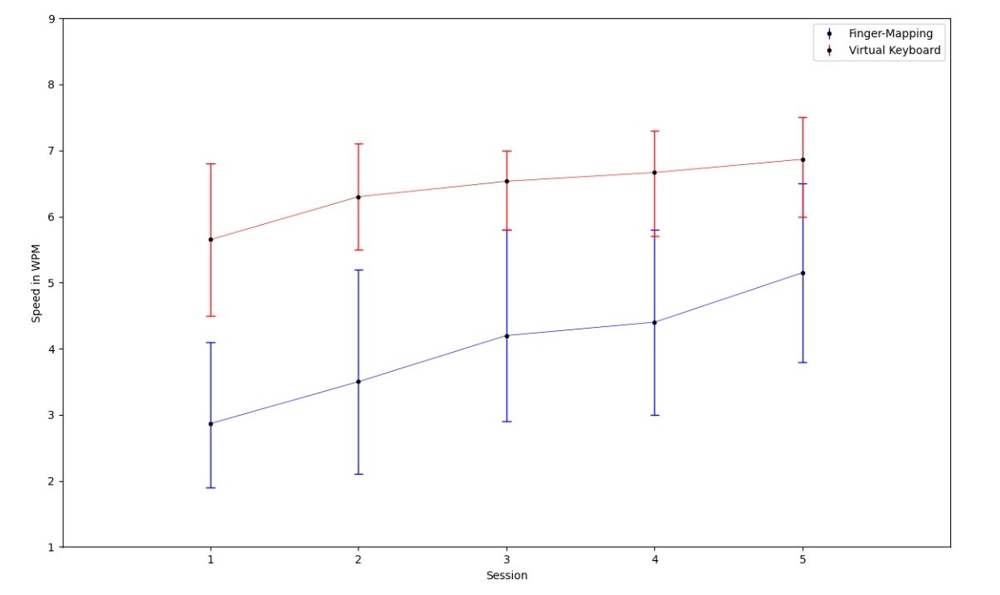
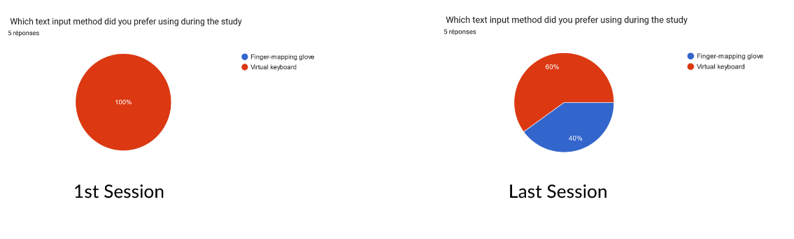

El Mehdi KHADFY, Abdellah BELAID
The field of augmented reality (AR) has seen significant growth in recent years, with applications in areas such as gaming, education, and industrial training. As AR technology continues to evolve, there is a growing need for more intuitive and user-friendly interaction techniques. Text input is a fundamental task in many AR applications, such as virtual assistants, search engines, and social media. However, current text input methods for AR can be limiting in terms of efficiency, ease of use and user-friendliness. This project aims to develop an interaction techniques for text input in AR systems that can help overcome some of these limitations.
The problem addressed in this project is the inefficiency of the current text input methods in AR environments specifically for long inputing tasks.
Virtual keyboard is the most common input technique used for inputs in AR and they are effective for small input tasks, but they are less user-friendly for big tasks, and can result in fatigue for the floating hand of the user, another problem is the complexity of the hand tracking problem which make the input of the keyboard less precise resulting in frustration.
Another interesting technique is Voice recognition, but it can be affected by ambient noise, making it difficult to use in noisy environments. These limitations of traditional text input methods are especially relevant in AR environments, where users are likely to be on the move or in noisy environments.
The proposed interaction method aims to improve text input speed and ease of using gloves to interact. By mapping keys to fingers, users can input text more efficiently and with fewer errors. The micro gestures used in this method are designed to be intuitive and easy to learn, allowing users to input text quickly and accurately. The proposed interaction method is designed for the aim to be more efficient and user-friendly than traditional text input methods, by addressing the limitations of current text input methods in AR environments.
The proposed technique for text input in augmented reality (AR) systems is finger-based, which means using gestures to trigger keys that are mapped to each finger, it was mainly inspired by the T9 Keyboards that were used for phones early on.
The method starts by mapping a number of keys among the alphabet, in addition to the space key and backspace key, to each finger. The mapping order is chosen to be alphabetical to simplify learning, starting from the thumbs to the pinky of the right hand, and then from the left thumb to the pinky of the left hand. This mapping is designed to be intuitive and easy to learn, allowing users to input text quickly and accurately.
To make the method more user-friendly and efficient, the backspace key is mapped to the pinky of the left hand exclusively, which means that the pinky on the left can only delete you last input, so that the process of correcting mistakes can be easier, while the space key is mapped to the thumb of the right hand, as it's among the most frequently used keys, so it's located in the most dominant finger of the right hand. This allows for quick and easy access to these keys which can improve text input speed and efficiency.
To input a specific key, the corresponding finger should be triggered for a specific number of times according to the order of that key in the finger mapping just like a traditional T9 keyboard with circulating order of 3. For example, to input the letter "A" the thumb of the right hand should be tapped twice, to input "E" the index finger of the right hand should be tapped tree times, and so on.
The finger tapping can be done using micro gestures like simply tapping the finger with the palm of the other hand. This allows users to input text without the need for a physical or virtual keyboard, making it more convenient for use in AR environments.
The prototype for the proposed interaction method was implemented using an Arduino Uno microcontroller and finger buttons. The buttons were used for there simplicity to integrate in the concept, however a better choice would be the pressure sensor in terms of performence and user friendliness.
The Arduino was connected to the buttons placed on the tip of each finger just like in the image bellow.
The Arduino was programmed to recognize the finger gestures, such as taps and ignore holds, and to send the corresponding keystrokes to the AR system while giving information about the multi-taping, then a Python code would interpate the received data to give the corresponding key. Also for better performance we showed the user the current state on a finger (to which key corresponds the current keystroke), so that the user can have a better experience without the need from him to count how many taps were detected.
The finger buttons were placed on the gloves in a way that they are easily accessible to the users and also in a way that they don't interfere with the natural movement of the fingers. The choice of the buttons was based on their size and weight to minimize discomfort for the users.
For the control group, a virtual keyboard was implemented using HTML and a LEAP MOTION device in conjunction with "touch-free" software. The virtual keyboard was designed to simulate a traditional keyboard and to be used in the same way as a traditional keyboard, but without the need for physical contact.
This was done to provide a benchmark for comparison with the proposed interaction method.
To evaluate the proposed interaction method, we conducted a user study with 5 participants. Each participant was asked to input a specific text as fast as they could using both the proposed interaction method and the virtual keyboard. The testing was conducted over a period of 5 sessions, with one session per day, to evaluate the learning effect of the proposed interaction method.
Here is the user interface of the experiment, where in the right is the platform for the virtual keybord, and in the left the test interface for our technique.
The participants were asked to complete the text input task using both the proposed interaction method and the virtual keyboard, and the completion time for each task was recorded. The typing speed was measured in keystrokes per minute (KPM) and words per minute (WPM) for each task.
A questionnaire was also distributed at the end of the experiment to collect user feedback on the proposed interaction method, including ease of use, comfort, and overall satisfaction.
The results of the experimental protocol showed that the proposed interaction method improved over time in text input speed compared to the virtual keyboard. On average, participants were able to input text faster using the Virtual keyboard. However, The results that were measured in both KPM and WPM showed that the learning rate on the proposed technique was much higher on every session compared to the Virtual keyboard as shows the figure below.
The speed of writing also improved on our technique as we were able to get an intersection in timings at the last session which is promissing.
The feedback from the questionnaire was varied. as all the five Participants prefered using the Virtual keyboard on the first session , mainly because it's easier to use, and seems familiar and similar to touch screens, However at the last session we were able to get the preference of 2 participents who reported that the proposed interaction method was faster this even though the quantitative data said otherwise, in addition to that all participants concluded that it was more comfortable , however 80% of them found out that the virtual keyboard was easier and required less concentration.
Overall, the results of the experiment suggest that the proposed interaction method is a possible alternative to traditional text input methods for AR systems. The finger-based method can improve text input speeds, and it is easy to learn. However proposing an alternative to Virtual keyboards isn't an easy task and requires more adjustements to the proposed interaction method which has also the added benefit of being more comfortable to use, as it does not require any heavy physical effort.
As shown in the results there is still effort to be made to make this interaction technique more convenient and extract the maximum out of it. a simple upgrade that can improve the performence would be using better sensors for tapping detection as the buttons were not very effective for a wide range of users with different typing preferences.
Finally, This project highlights the potential of finger-based interaction method in the field of AR and it could be further developed in the future by implementing it on other devices and by testing it with different user groups.